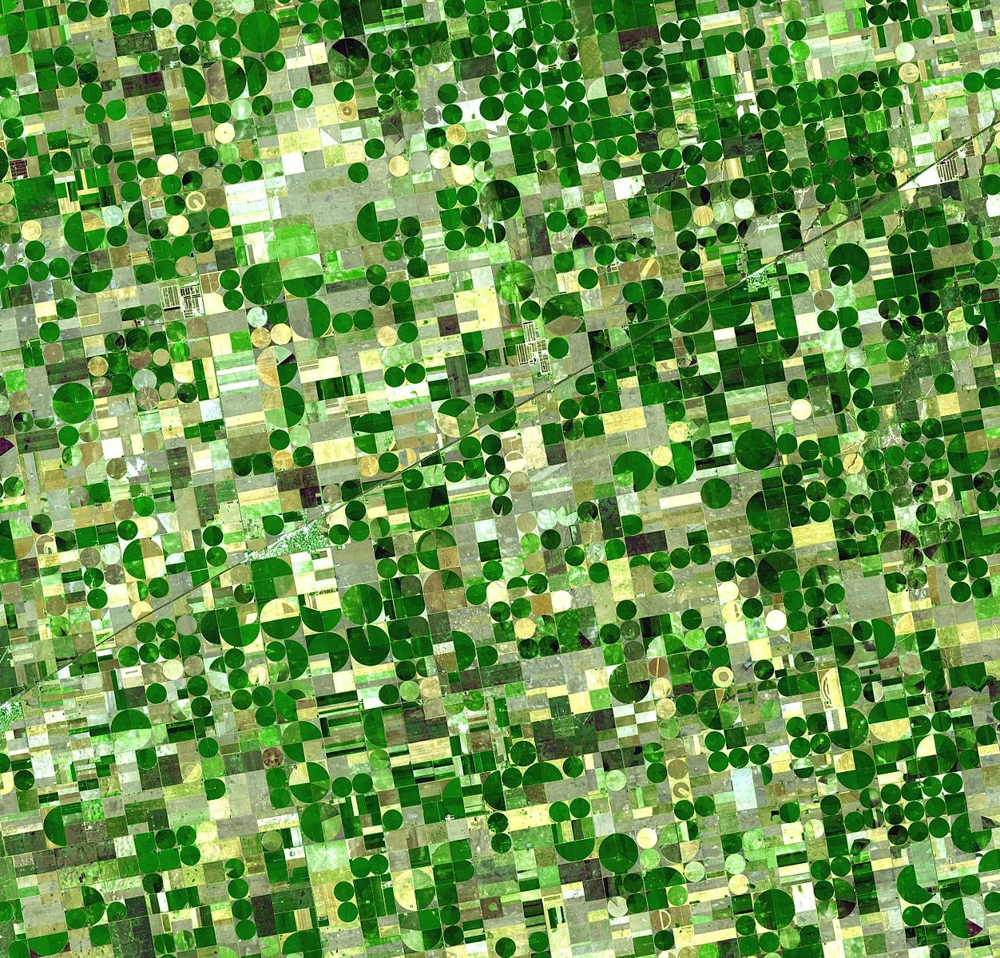

Blog · November 23, 2014
Build
I love to create, to build things. Especially things bringing people together. Here are a couple ideas I’ve been working on lately. If you think any of them are interesting, connect with me. They’re all in active brainstorm mode.
Rebuilt TEDx Music Project and have been thinking a lot about how to structure visualizations of its hundreds of tracks. So far we’re leaning toward geotag for a world map of TEDx music. There’s also navigation, which might be made interestingly interactive by making a network map of communities of songs with similar attributes, such as genre, instrument or danceability. Installation on a big touchscreen. Ideas and collabs welcome.
Redoing the TEDx music site reminded me of Project HAO and that now I can actually probably set it up pretty easily. So I will. Looks like we can send a hammock + stand to US planetariums for under 200 bucks through Amazon, so I’ll probably set it up where 20 people each donate $10 and when the 20th name comes in *boom* we sent a hammock to a planetarium and are on our way towards hooking up the next. Extra funds can be used in the future to pay for international shipping once all the US planetariums have hammocks.
I’m also gearing up to do a posture measurement with Vicon motion capture software with the wonderful biomechatronics guys at MIT Media Lab. I’m going to wear ~100 sensors, do a sequences of moves and be tracked in 360 degrees at .2 mm precision. The idea is to be strategic in stretches. If one could identify asymmetries, torsions or other malalignments in posture, one could theoretically choose stretches to correct them. I’m going to test that out.
Learning about neurotech has been mind-blowing. I’m attending a pilot class at MIT this semester about how technology is catapulting neuroscience. Along the way we’ve gone from measuring genetic changes in cells to imaging an entire brain. I’ve had the pleasure of interviewing professors and graduate students; seeing and using the tools. We’re currently half way through a Scientific American blog series from EyeWire that shares the experience with the world. Excited to write up the rest. So far it’s been fodder for fascinating conversations.
I titled this post “Build” because I suddenly felt compelled to share things I am building. Side projects you have here, mostly. Love a good side project. Love to learn of yours! And I was serious about that first paragraph.
PS: recent additions to my Epic Pics folder:
filename “capybara and monkeys hehe”

Crops in Kansas, formerly my background image
highlands in Iceland
my notebook 🙂
First published on my old blog, amyrobinson.wordpress.com, November 23, 2014.